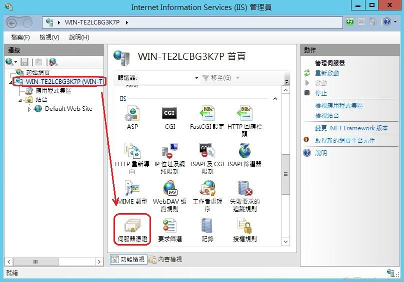
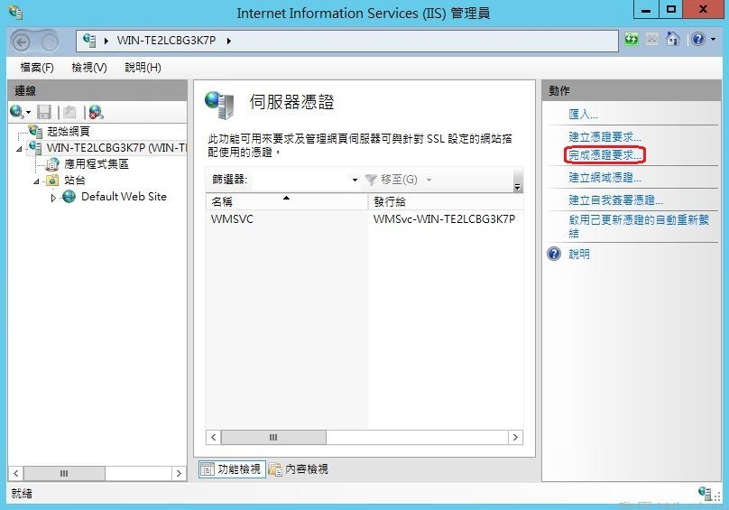
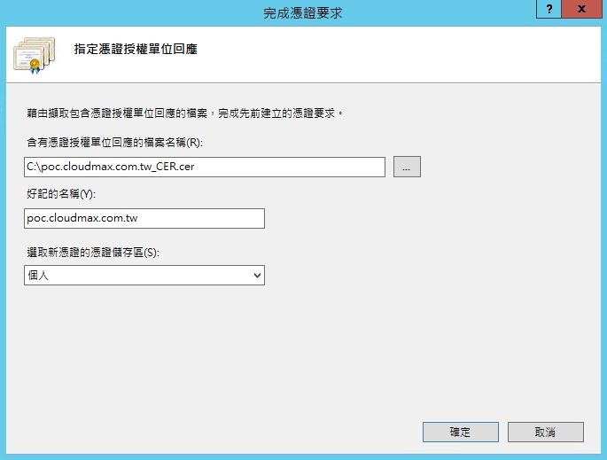
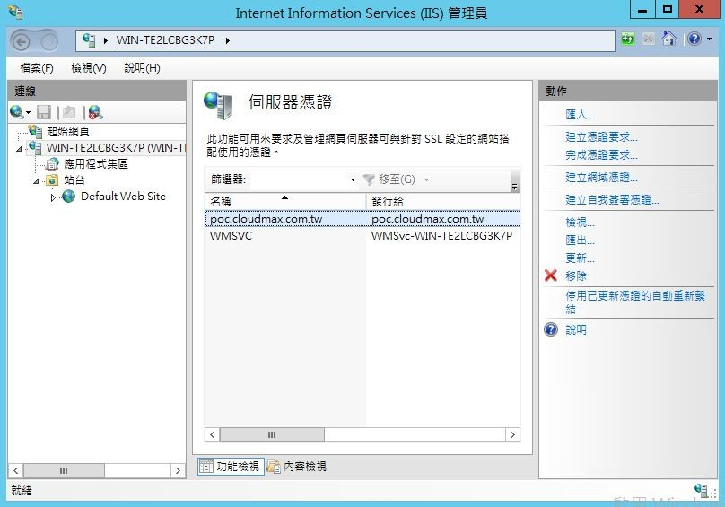

記錄SSL的安裝
記錄SSL的安裝
因為有使用到SSL所以記錄一下，有關SSL的相關資訊
Let’s Encrypt 申請
因為是免費 SSL 憑證
使用 SSH 登入 Ubuntu 18.04.1 LTS 主機
先確認 snapd 已升級到最新版本,確認現有已安裝的 Certbot 已確實移除
1 | sudo snap install core; sudo snap refresh core |
安裝過程中會自動安裝一個
snap.certbot.renew.service系統服務，此服務專門用來自動更新憑證之用。你可以透過systemctl list-units --all --type=service --no-pager | grep certbot查詢該服務，或透過service snap.certbot.renew status查詢目前的執行狀態。剛安裝好的 certbot 並不會有服務執行。
建立Let’s Encrypt需要的文件
因為nginx是docker來建立的，它的html放在
/usr/shar/nginxdocker-compose.yml
1
2
3
4
5
6
7
8
9
10
11
12
13
14
15
16version: '3.4'
services:
#......
volumes:
#....
# ---------------- nginx ----------------
#- ~/docker/uwsgi/docker_config/nginx.conf:/etc/nginx/nginx.conf 在app的目錄下
- ./docker_config/nginx.conf:/app/nginx.conf
- ./docker_config/server.conf:/etc/nginx/server.conf
- ./docker_config/location_v0.5.conf:/etc/nginx/location_v0.5.conf
- ./docker_config/uwsgi.ini:/app/uwsgi.ini
- ./docker_config/uwsgi.ini:/etc/uwsgi/uwsgi.ini
# -----------------html ------------------
- /usr/share/nginx:/usr/share/nginx
#.....
建立資料夾
1 | cd /usr/share/nginx |
在server.conf加入
1 | #Let’s Encrypt相關 |
並測試網址可以正常連接在路徑下/usr/share/nginx/letsencrypt/.well-known/acme-challenge下建立test.html
1 | this is a ssl |
重啟nginx
以瀏覽器連接網址http://www.examplefms.com/.well-known/acme-challenge/test.html如果可以顯示就可以進行下一步
- 取得憑證
1 | certbot certonly --webroot --agree-tos --email ttom@example.com.tw --webroot-path /usr/share/nginx/letsencrypt -d examplefms.com -d www.examplefms.com |
命令中的幾個flag大概解釋
1 | certonly :說明我們只需要獲取證書，不需要`certbot` 為我們去執行自動安裝 |
注意：所有偵錯訊息都會放在
/var/log/letsencrypt/letsencrypt.log檔案中。
接下來成功的畫面
1 | Successfully received certificate. |
生成的證書會保存在固定的路徑下
1 | /etc/letsencrypt/live/{{ EXAMPLE.COM }}/fullchain.pem |
測試是否會自動更新憑證
1 | sudo certbot renew --dry-run |
在server.conf加入SSL的設定
1 | server { |
確認憑證狀態
1 | sudo certbot certificates |
自動更新憑證
驗證憑證自動更新
1 | sudo certbot renew --dry-run |
上述命令會自動設定一個系統排程，你可以透過
systemctl list-timers --no-pager或systemctl list-unit-files --type timer查詢到一個名為snap.certbot.renew.timer的排程作業(UNIT)。
調整 Systemd 的 Timer 排程
1 | vim /etc/systemd/system/timers.target.wants/snap.certbot.renew.timer |
如下
1 | #.... |
動作
1 | sudo systemctl start snap.certbot.renew.timer |
參考資料
如何使用 Certbot 建立免費的 TLS/SSL 網域憑證並自動產生 PFX 憑證
NGINX 使用 Let’s Encrypt 免費 SSL 憑證設定 HTTPS 安全加密網頁教學
Comodo的申請
因為公司同事已經有申請SSL下來，所以要來安裝到IIS上，記錄下來以免下次再使用時忘記
- 第 1 步：建立憑證要求
公司同事有申請下來，所以此步驟來跳過去，可參考下面參考資料的保哥 - 第 2 步：購買憑證
我們是向COMODO來購買的
有四個檔案
153940105.crt
AddTrustExternalCARoot.crt
COMODORSAAddTrustCA.crt
COMODORSADomainValidationSecureServerCA.crt - 憑證匯入
在153940105.crt雙擊在詳細資料的主體別名有列出可以使用的網域
在IIS上選擇”伺服器憑證”  在右邊選擇"完成憑證要求"  「含有憑證授權單位回應的檔案名稱(R):」輸入要安裝的憑證。 「好記的名稱(Y): 」輸入憑證名稱或自己好記的名字。 「選取新憑證的儲存區」依個人喜好選擇。  「確定」後即可看到憑證已安裝完成。  - 設定站台繫結
最後一個步驟就是要將剛剛完成的憑證繫結(Binding)到站台去，你可以先選取要設定 SSL 的站台，按下滑鼠右鍵並選取 [繫結]
然後點擊 [新增] 按鈕，在類型欄位選取 https，然後再到 SSL 憑證欄位選取你剛剛新增的 [自我憑證]，這裡顯示的名稱是你剛剛匯入自我憑證時「好記的名稱」欄位所設定的值。最後按下 [確定] 按鈕即可將 SSL 憑證設定完成。
Comodo的三個crt檔合併
因此我們正確的作法是將Comodo所提供的三個crt檔合併指令如下
1 | cat www_cklube_com_tw.crt COMODORSADomainValidationSecureServerCA.crt COMODORSAAddTrustCA.crt > club_ssll.crt |